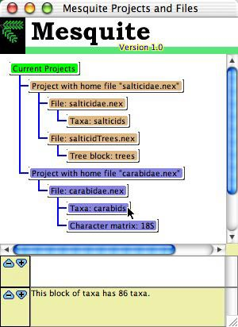

Making, opening and saving data files
Mesquite is currently designed for data files following the
NEXUS format (Maddison, D.R., D.L. Swofford, and W.P. Maddison.
1997. NEXUS: An extensible file format for systematic information.
Systematic Biology 46: 590-621) although it can import and export
files of other formats. Thus, you could create your data file
with a text editor or word processor if you followed NEXUS conventions.
However, you'll probably find it easier to use Mesquite's data
matrix editors, tree windows, and so on, to specify the information
in the data file, and let Mesquite handle the formatting issues.
Mesquite can read NEXUS files created with MacClade,
and can save files that MacClade understands. For information
on importing and exporting other formats, see the page on using
Mesquite with other programs.
Creating a new data file
To create a new blank data file, choose File>New
(i.e., the New menu item in the File menu). You'll be presented
with a dialog box in which you enter the name of the set of taxa
(e.g., "Drosophila") the initial number of taxa, whether
or not you want to show a tree window, and whether to make a character
data matrix. (The taxa could be species, or sequencies, or whatever
are your "terminal taxa", "Operational Taxonomic
Units", or evolutionary units.) (You can just leave the name
of the set of taxa as "Untitled" if you wish, but that
may become confusing if you ever have more than one set of taxa
in the same file.) You can later add more taxa using (List
of Taxa)List>Add Taxa or (Character
Matrix Editor)>Matrix>Add Taxa, or by using the
Add Taxa tool in the Character Matrix
editor.
When you make a new data file, you'll be presented with a list
of taxa or perhaps a tree window. The taxa are automatically named
"taxon 1", "taxon 2", and so on. You can rename
a taxon name (e.g., "D. melanogaster", "D. willistoni",
and so on) by selecting the I-beam tool in the List of Taxa window
and touching it on the taxon name. There is a submenu, (List
of Taxa)List>Alter Taxon Names>, that might offer
other ways to edit taxon names. Taxon names can also be edited
in the Character Matrix editor,
either manually or using the Taxon Utilities and Taxon Names submenus
of the Matrix menu.
A new data file does not automatically include a matrix of character
data unless you request it. To add new matrices, see the section
on the Character Matrix editor.
Opening an existing data file
To open an existing data file, use File>Open>File.
If Mesquite detects that the file is not a NEXUS file, it will
ask to you to choose its file format for importing.
Saving a data file
Save a data file using File>Save
File or File>Save
File As. You can also export to other formats using
File>Export.
You can indicate that a character matrix should be written in
the NEXUS file as INTERLEAVE (or not) by going to the Character
Matrix Editor window and selecting the menu item Matrix>Current
Matrix>Write Interleaved
Projects and files
Mesquite is not restricted to considering only one file at a
time, but instead can collect information from various files
and
consider it together. Such a collection of files sharing information
is called a project. Implicitly when you first
open a file, a project is created, one which contains only a
single
file. Other files can be linked into the project using the Link
commands.
Since Mesquite can accumulate and analyze a more or less indefinitely
large collection of elements of information (several sets of taxa,
data matrices, and so on), Mesquite doesn't need to respect the
boundaries of files. That is, it could read a TAXA block from
one file on the disk, and read a data matrix for those taxa from
another file on disk, and a set of trees from another file. While
other programs can handle external treefiles or command files,
Mesquite can handle external character matrices, assumptions,
and so on.
Mesquite therefore makes a distinction between the collection
of elements of information that are currently interacting with
one another in Mesquite's calculations, and the physical files
on disk or server. The former collection, which may include information
gathered from several files, is called a project. The set of files
to which the elements of information in a project belong are said
to be linked.
Mesquite shows a list of the projects and files currently active
in the Projects and Files window. In the example shown here,
there are two projects currently open. The first, marked by a
sandy color, includes two linked files, "salticidae.nex" with
a block of taxa and "salticidTrees.nex" with trees. The second
project, marked in blue, includes one file "carabidae.nex" with
a block of taxa and a character matrix. The windows (tree windows,
data editors, etc.) belonging to these two projects will also
be distinguished by these different background colors. Information
is not shared between projects, so that when you are using the
windows of "salticidae.nex", the character matrix "18S" will
not be available for use.

Opening versus Including versus Linking files
In Mesquite there are three ways to read a file: Open, Include
and Link.
- Open — If a file is to be opened up independently
of any other open files, and not share information, it should
be opened using the Open File... menu item. A file opened in
this way is treated as belonging to a project separate from
any
other
files open at the time. In the graphic above, Open File...
was called twice, once to open salticidae.nex, second to
open carabidae.nex.
- Include — To read in the contents of a file and
merge them into an existing file, so that all of its information
becomes part of the existing file and is saved into that existing
file, use the Include File... menu item.
- Link — To read in the contents of a file and
add its information to a collection of information in a project
in use, but to maintain the file separate for purposes of writing
to the disk, use the Link File... menu item in the File menu.
A file opened
in this way will become part of the project. Because of the
interdependencies among elements of information that can exist
(list of taxa in a data file matches list of taxa in a tree
file), it is possible that editing information that belongs
to one file will also change information in a linked file.
In the graphic above, Link File... was called once, to link
salticidaeTrees.nex with salticidae.nex.